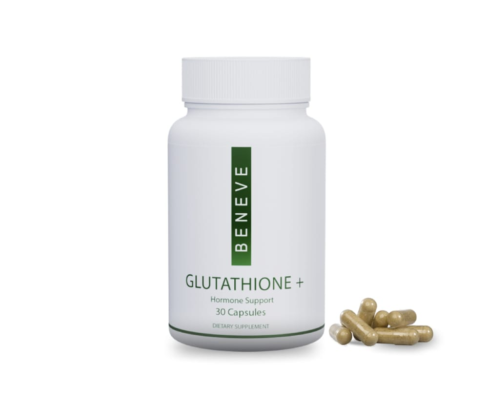

Hay un compuesto llamado DIM que se menciona mucho cuando se habla de hormonas. Aparece en suplementos, en podcasts, en todas las redes de bienestar.
Aquí va lo que casi nunca se dice en voz alta: el DIM no lo sacas directamente de una planta. Lo produce tu cuerpo.
El brócoli, la col rizada, el repollo, la coliflor y sus parientes contienen una familia de compuestos llamados glucosinolatos. Cuando los masticas y los digieres, se convierten en indol-3-carbinol, y el ácido de tu estómago lo transforma en DIM. La verdura es la materia prima. Tu propia digestión hace el trabajo.
Lo mismo pasa con el otro nombre de esta lista. Al glutatión le dicen el antioxidante maestro, y tu hígado lo fabrica todo el tiempo a partir de tres aminoácidos. Uno de ellos, la cisteína, viene casi por completo de alimentos ricos en azufre. Huevos. Ajo. Cebolla. Y, otra vez, la familia de las crucíferas.
Así que toda la estrategia de esta guía cabe en una frase: come la materia prima con la frecuencia suficiente para que tu cuerpo pueda cumplir su parte.
El problema nunca es creer. Casi nadie duda de que el brócoli le hace bien. Lo difícil es comérselo un martes. La cena es donde las verduras se planean y luego no se cocinan. El desayuno casi siempre es causa perdida.
El almuerzo es distinto. Es la única comida que puedes decidir una sola vez, un domingo, y luego simplemente llevarla contigo.
De eso se trata esta guía. Diez almuerzos que puedes empacar, todos hechos con las verduras crucíferas que tu cuerpo convierte en DIM, y con los alimentos de azufre que tu cuerpo convierte en glutatión presentes en todos ellos. Aguantan en un recipiente. No necesitan recalentarse. No son tristes.
Una nota rápida y sincera antes de empezar. La comida no es un medicamento, y esta guía no es consejo médico. Comer bien apoya lo que tu cuerpo ya hace, y lo hace con suavidad y con el tiempo. Nada de lo que aparece aquí es un tratamiento para una condición hormonal. Si tienes una, o tomas algún medicamento, esa conversación es con tu profesional de la salud. La buena comida va al lado, no lo reemplaza.
Dos caminos, y cada uno tiene una lista corta de alimentos detrás.
1. Las verduras crucíferas se convierten en DIM.
El brócoli, el repollo, la col rizada, la coliflor, las coles de Bruselas, el bok choy, la arúgula, el berro y el rábano tienen glucosinolatos. Al masticar y digerir, se descomponen en indol-3-carbinol, y tu estómago convierte una parte en DIM. Por eso el consejo siempre es come la verdura, no busca el compuesto. El compuesto viene después de la verdura.
2. Los alimentos con azufre se convierten en glutatión.
Tu cuerpo arma el glutatión con tres aminoácidos: cisteína, glicina y glutamato. La glicina y el glutamato son fáciles de conseguir. La cisteína es el cuello de botella, y la cisteína llega en los alimentos ricos en azufre. Huevos, ajo, cebolla, puerro, chalotas, espárragos y, otra vez, las verduras crucíferas, por eso esa familia sigue apareciendo.
3. Los dos caminos prefieren poquito y seguido, no mucho y rara vez.
Esto es lo que decide si algo de esto funciona. Una ensalada enorme de col rizada en la semana hace mucho menos que una taza de algo crucífero casi todos los días. Lo cual, otra vez, es un argumento a favor del almuerzo.
Una nota sobre la cocción. Crudas o apenas cocidas conservan más glucosinolatos que hervidas por mucho tiempo. Repollo rallado crudo, brócoli asado rápido y un escaldado de dos minutos funcionan bien. Hervir brócoli quince minutos y tirar el agua al fregadero se lleva buena parte del beneficio. Ásalo, rállalo o cuécelo al vapor poco tiempo.
Una nota sobre los germinados de brócoli. Los germinados de brócoli de tres días tienen muchas veces más glucosinolatos que una cabeza madura, gramo por gramo. Un puñito encima del almuerzo hace más con menos esfuerzo que cualquier otra cosa de esta guía. Los encuentras en la mayoría de los supermercados cerca de las bolsas de ensalada, y puedes cultivarlos en un frasco por centavos.

Todo lo de esta guía funciona para que el DIM llegue a ti por medio de la comida. Glutathione+ de Beneve es una cápsula diaria que lleva DIM, junto con Opitac™ Glutathione y Xanthohumol.
Conoce Glutathione+Todos los almuerzos de esta guía son los mismos cinco espacios. Cuando la ves, puedes armar los tuyos para siempre y dejar de necesitar recetas.
Base crucífera + Proteína + Aliado de azufre + Aderezo + Crujiente
1. Una base crucífera, unas dos tazas. Repollo rallado, col rizada masajeada, brócoli asado, arroz de coliflor, coles rebanadas. Este es el espacio del DIM y no es opcional.
2. Una proteína, del tamaño de la palma de tu mano. Pollo, atún, huevos, garbanzos, res, pavo, edamame. Esto es lo que te mantiene lejos de la máquina de snacks a las tres.
3. Un aliado de azufre. Cebolla morada, ajo en el aderezo, un huevo duro, unas puntas de espárrago. Casi siempre ya va en el aderezo, y esa es la idea.
4. Un aderezo con grasa y ácido. La grasa lleva el sabor y te mantiene satisfecho. El ácido hace que todo siga sabiendo fresco después de cuatro horas en una bolsa. Nunca te saltes el ácido.
5. Algo crujiente. Almendras tostadas, semillas de calabaza, ajonjolí, rábano, un puñito de germinados de brócoli. Esto es lo que hace que valga la pena abrir un almuerzo empacado.
La regla del recipiente. Lo húmedo abajo, lo firme en medio, lo crujiente arriba, y el aderezo aparte si empacas con más de un día de anticipación. Agita a mediodía.
El repollo morado y la col rizada juntos llevan la carga crucífera, el aderezo de ajonjolí y jengibre disimula eso por completo, y es el almuerzo que mejor aguanta de toda esta guía. De verdad queda mejor al segundo día.
| Ingrediente | Cantidad |
|---|---|
| Repollo morado, rallado fino | 4 tazas |
| Col rizada, sin tallos, rebanada fina | 2 tazas |
| Pollo cocido, deshebrado | 1 lb |
| Zanahoria, rallada | 1 |
| Cebolla de verdeo, rebanada | 4 |
| Almendras rebanadas, tostadas | ½ taza |
| Aceite de ajonjolí | 2 cdas |
| Vinagre de arroz | 3 cdas |
| Jengibre fresco, rallado | 1 cda |
| Ajo, machacado | 1 diente |
| Miel | 1 cdta |
| Sal y pimienta | al gusto |
Brócoli con huevo es la combinación de crucífera más azufre en su forma más directa, y el aderezo de yogur hace que sepa a almuerzo de delicatessen y no a proyecto de salud.
| Ingrediente | Cantidad |
|---|---|
| Floretes de brócoli, picados pequeños | 5 tazas |
| Huevos, duros y picados | 8 |
| Yogur griego natural | ¾ taza |
| Mostaza Dijon | 1 cda |
| Cebolla morada, picada fina | ½ |
| Limón, jugo | 1 |
| Eneldo fresco, picado | 2 cdas |
| Semillas de calabaza | ¼ taza |
| Sal y pimienta | al gusto |
La col rizada es la única hoja de ensalada que sobrevive en una bolsa con aderezo César hasta el mediodía. El aderezo lleva ajo crudo, así que el azufre cumple doble función como sabor.
| Ingrediente | Cantidad |
|---|---|
| Col rizada, sin tallos, en trozos | 8 tazas |
| Garbanzos, escurridos y secos | 2 latas |
| Aceite de oliva | 3 cdas |
| Pimentón ahumado | 1 cdta |
| Yogur griego natural | ½ taza |
| Parmesano, rallado | ⅓ taza |
| Ajo, machacado | 2 dientes |
| Limón, jugo | 1 |
| Pasta de anchoas, opcional | 1 cdta |
| Sal y pimienta | al gusto |
El DIM es para lo que sirven el brócoli, el repollo y la col rizada de estos almuerzos. Glutathione+ lo trae en una cápsula, con Opitac™ Glutathione y Xanthohumol a su lado.
Conoce Glutathione+Las coles de Bruselas crudas son dulces y con sabor a nuez, nada que ver con el recuerdo de las hervidas, y crudas significa que los glucosinolatos llegan intactos. La manzana y la nuez hacen que sepa a otoño y no a disciplina.
| Ingrediente | Cantidad |
|---|---|
| Coles de Bruselas, rebanadas finas | 6 tazas |
| Manzana, crujiente, en tiritas | 1 |
| Pavo o pollo cocido, en cubos | 1 lb |
| Nueces, tostadas y picadas | ½ taza |
| Chalota, rebanada transparente | 1 |
| Aceite de oliva | 3 cdas |
| Vinagre de manzana | 2 cdas |
| Mostaza Dijon | 1 cdta |
| Miel | 1 cdta |
| Sal y pimienta | al gusto |
La ensalada de brócoli es tallo de brócoli rallado, que es la parte que casi todos tiran y es igual de crucífera que los floretes. Los fideos fríos hacen que se sienta como comida para llevar.
| Ingrediente | Cantidad |
|---|---|
| Ensalada de brócoli (broccoli slaw) | 4 tazas |
| Fideos soba o de arroz, cocidos y fríos | 8 oz en seco |
| Edamame, sin cáscara | 1½ tazas |
| Repollo morado, rallado | 2 tazas |
| Cebolla de verdeo, rebanada | 4 |
| Cilantro, picado | ½ taza |
| Aceite de ajonjolí | 2 cdas |
| Salsa de soya o tamari | 3 cdas |
| Vinagre de arroz | 2 cdas |
| Ajo, machacado | 2 dientes |
| Semillas de ajonjolí | 2 cdas |
| Chili crisp, opcional | al gusto |
El arroz de coliflor es la base crucífera escondida a plena vista, y a diferencia del arroz de verdad, no se vuelve masa en un recipiente. Los frijoles negros y el aguacate hacen el resto.
| Ingrediente | Cantidad |
|---|---|
| Arroz de coliflor | 6 tazas |
| Frijoles negros, escurridos | 2 latas |
| Cebolla morada, picada | 1 |
| Ajo, machacado | 3 dientes |
| Comino y pimentón ahumado | 1 cdta de cada uno |
| Aceite de oliva | 2 cdas |
| Limón verde, jugo | 2 |
| Tomates cherry, en mitades | 2 tazas |
| Aguacate | 2 |
| Cilantro, picado | ½ taza |
| Sal y pimienta | al gusto |
El berro y el rábano son crucíferos y los dos son fuertes de sabor, así que este te despierta. También es el almuerzo más rápido de la guía, unos seis minutos.
| Ingrediente | Cantidad |
|---|---|
| Berro | 6 tazas |
| Rábanos, rebanados finos | 10 |
| Atún en aceite de oliva, escurrido | 3 latas |
| Huevos, duros y en cuartos | 4 |
| Pepino, rebanado | 1 |
| Chalota, rebanada fina | 1 |
| Aceite de oliva | 3 cdas |
| Limón, jugo | 1 |
| Mostaza Dijon | 1 cdta |
| Alcaparras | 2 cdas |
| Sal y pimienta | al gusto |
El bok choy se mantiene crujiente como casi ninguna otra verdura, y este es el de la lista que sí calma un buen apetito. El ajo cumple función de azufre y de sabor al mismo tiempo.
| Ingrediente | Cantidad |
|---|---|
| Arrachera o solomillo, rebanado fino | 1 lb |
| Bok choy, picado | 6 tazas |
| Fideos de arroz, cocidos y fríos | 8 oz en seco |
| Ajo, machacado | 4 dientes |
| Jengibre fresco, rallado | 1 cda |
| Salsa de soya o tamari | 3 cdas |
| Aceite de ajonjolí | 1 cda |
| Vinagre de arroz | 2 cdas |
| Cebolla de verdeo, rebanada | 4 |
| Semillas de ajonjolí | 2 cdas |
| Aceite neutro, para la sartén | 1 cda |
Asar el brócoli a calor fuerte hace que de verdad quieras comerlo frío, que es todo el problema entre las verduras y el almuerzo. El feta y el limón hacen el trabajo pesado.
| Ingrediente | Cantidad |
|---|---|
| Floretes de brócoli | 8 tazas |
| Cebolla morada, en gajos | 1 |
| Farro o quinoa, cocido | 3 tazas |
| Queso feta, desmenuzado | 1 taza |
| Aceite de oliva | 4 cdas |
| Limón, ralladura y jugo | 1 |
| Ajo, machacado | 2 dientes |
| Semillas de calabaza | ½ taza |
| Hojuelas de chile | ½ cdta |
| Sal y pimienta | al gusto |
Sin nueces, sin lácteos, sin gluten y sin transgénicos. Formulado para apoyar la salud celular, apoyar tus hormonas y el bienestar en general.
Conoce Glutathione+La hoja de repollo ES el wrap, así que la crucífera es parte de la estructura y no un ingrediente que tengas que acordarte de poner. El aderezo lleva ajo, hierbas y aguacate.
| Ingrediente | Cantidad |
|---|---|
| Repollo de Saboya o verde, hojas grandes de afuera | 12 |
| Pavo o pollo cocido, rebanado | 1 lb |
| Aguacate | 2 |
| Yogur griego natural | ½ taza |
| Ajo | 1 diente |
| Albahaca y perejil frescos | 1 taza compacta |
| Limón, jugo | 1 |
| Pepino, en tiritas | 1 |
| Zanahoria, rallada | 1 |
| Germinados de brócoli | 2 tazas |
| Sal y pimienta | al gusto |
Cuarenta minutos un domingo y casi toda la semana queda resuelta. No estás cocinando cinco almuerzos, estás cocinando cinco componentes.
Enciende el horno a 450F y asa, en dos bandejas: una cabeza grande de brócoli en floretes, un manojo de espárragos y una lata de garbanzos escurridos. Veinte a veinticinco minutos. Esto cubre los almuerzos 3 y 9, y la mitad de cualquier otro.
Mientras tanto, en la estufa: cuece ocho huevos duros y prepara una tanda de farro, quinoa o fideos. Enjuaga los granos o los fideos en frío.
En la tabla, sin cocinar: ralla medio repollo morado y una bolsa de coles de Bruselas. Los dos duran tres días rallados, en un recipiente, con una toalla de papel encima.
Haz un frasco de aderezo. Aceite de oliva, limón, ajo machacado, mostaza, sal. Sirve para nueve de los diez almuerzos de aquí y toma noventa segundos.
Y luego, toda la semana, arma. Base crucífera, proteína, aliado de azufre, aderezo, algo crujiente. Dos minutos en la mañana, o dos minutos la noche anterior si las mañanas no son lo tuyo.
Crucíferas: brócoli, repollo morado, repollo de Saboya, col rizada, coles de Bruselas, coliflor o arroz de coliflor, bok choy, arúgula, berro, rábanos, germinados de brócoli, ensalada de brócoli (broccoli slaw)
Aliados de azufre: huevos, ajo, cebolla morada, chalotas, puerros, espárragos, aguacate, espinaca, yogur griego
Proteínas: pollo, pavo, arrachera, atún en aceite de oliva, garbanzos, frijoles negros, edamame, feta, parmesano
Granos y fideos: farro, quinoa, fideos soba, fideos de arroz
Crujiente: almendras rebanadas, nueces, semillas de calabaza, semillas de ajonjolí
Despensa: aceite de oliva, aceite de ajonjolí, vinagre de arroz, vinagre de manzana, mostaza Dijon, salsa de soya o tamari, miel, alcaparras, pimentón ahumado, comino, hojuelas de chile
Hierbas frescas: eneldo, cilantro, albahaca, perejil
La versión corta, si no compras nada más: una bolsa de repollo morado rallado, una docena de huevos, una cabeza de ajo, un limón y una botella de aceite de oliva. Con eso salen cuatro de estos almuerzos.
Los dos caminos
Verduras crucíferas → glucosinolatos → indol-3-carbinol → DIM
Alimentos con azufre → cisteína → tu propio glutatión
La fórmula
Base crucífera + proteína + aliado de azufre + aderezo con grasa y ácido + algo crujiente
Las reglas que de verdad importan
La versión de cinco minutos
Ensalada de repollo en bolsa, una lata de atún en aceite de oliva, un huevo duro, limón, aceite de oliva, sal. Listo.
No necesitas los diez almuerzos. Necesitas dos que de verdad te gusten, en repetición, casi todas las semanas.
Eso es lo que hay detrás de cualquier hábito de comida que sobrevive. La variedad es lo que la gente planea y la constancia es lo que de verdad funciona. Escoge los dos que te sonaron bien mientras leías, prepáralos esta semana, y deja que los otros ocho esperen para cuando te aburras.
Los caminos de esta guía no se fijan en tu entusiasmo. Se fijan en la frecuencia. Una taza de algo crucífero casi todos los días, un alimento con azufre en la mayoría de las comidas, y tu cuerpo tiene lo que necesita para seguir haciendo lo que hace.
Y sé razonable contigo en los días que no se pueda. Un almuerzo empacado cuatro días de cinco es una vida totalmente distinta a cero días de cinco, y la diferencia entre cuatro y cinco casi no vale nada.
La comida es la base. Si quieres construir sobre ella, este es el único producto que vale la pena conocer.
Glutathione+ de Beneve es una cápsula diaria hecha con los mismos dos nombres en los que se basa esta guía. Cada cápsula lleva 300mg de Opitac™ L-Glutathione, 150mg de DIM, 175mg de extracto de lúpulo para el xanthohumol, y un poco de extracto de pimienta negra para ayudar a la absorción.
Ese número de DIM es el útil para recordar. Es el mismo compuesto que tu cuerpo fabrica con las verduras de la Parte Uno, en una cantidad diaria fija que no depende de si el jueves lograste empacar el repollo.
Beneve dice que está formulado para apoyar la salud celular y apoyar tus hormonas, y que promueve un metabolismo equilibrado de los estrógenos, apoya una desintoxicación y una función hepática saludables, y ofrece protección antioxidante y celular.
Treinta cápsulas, una al día, sin mezclar ni medir. Sin nueces, sin lácteos, sin gluten y sin transgénicos.
No reemplaza las verduras. Nada las reemplaza. Hace más fácil mantener la constancia las semanas en que la lonchera no se da.
Ya tienes los dos caminos, los diez almuerzos, el plan de preparación y la lista de compras. Eso es todo lo que necesitas para un martes completamente distinto.
Si quieres ir más allá, échale un vistazo a Glutathione+ para la versión diaria de lo que hacen estos almuerzos, o escríbele de nuevo a la persona que te envió esta guía. Te puede contar qué les ha funcionado a las personas que conoce.
De cualquier forma, empaca el repollo. Es el cambio más fácil de todos y el que más rinde.
Esta guía es para educación general y no es consejo médico. No diagnostica, trata, cura ni previene nada. Las necesidades de cada persona varían, y las cifras de nutrición son estimados aproximados para planear.
Estas declaraciones no han sido evaluadas por la Administración de Alimentos y Medicamentos (FDA). Glutathione+ no está destinado a diagnosticar, tratar, curar ni prevenir ninguna enfermedad.
Las verduras crucíferas interactúan con la función de la tiroides en algunas personas, y vale la pena hablar con un profesional tanto del DIM como del consumo de crucíferas si estás embarazada, en lactancia, en terapia hormonal, tomando anticoagulantes o manejando una condición de la tiroides. Si tienes una condición médica o tomas medicamentos, habla con tu profesional de la salud antes de hacer cambios importantes en tu forma de comer.